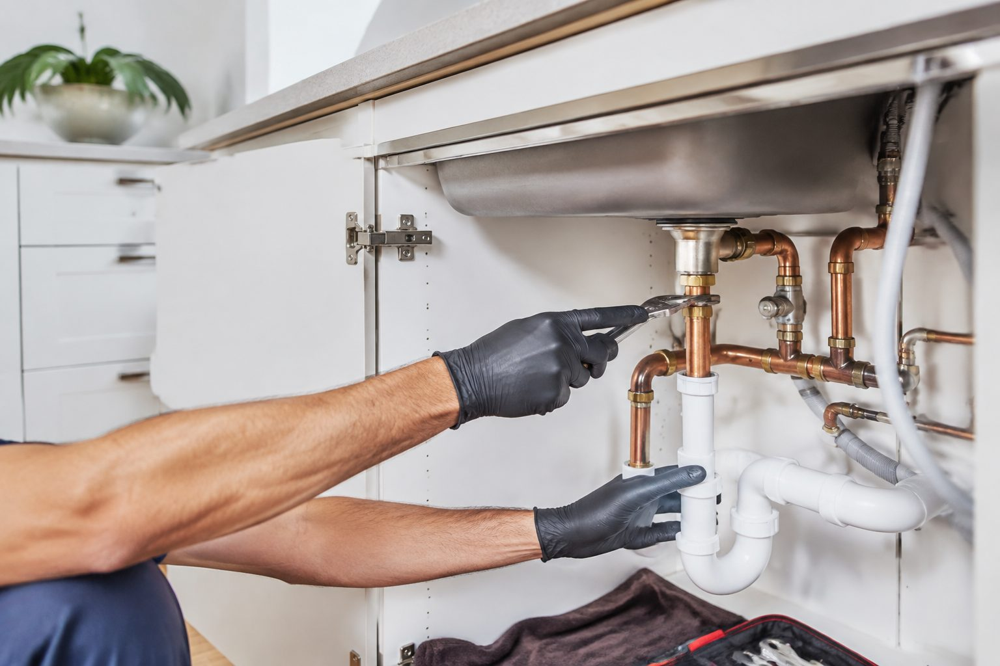
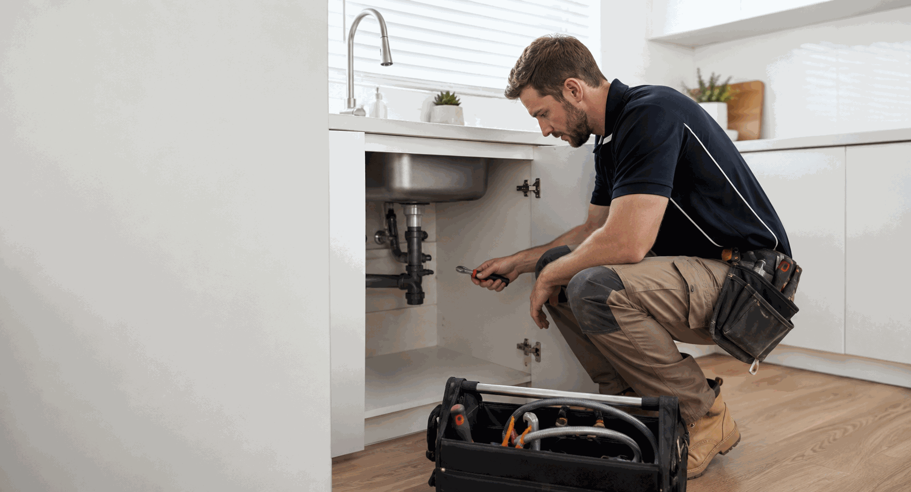

Location
State the property address or suburb, affected room and fixture. For apartments, include the unit number and any access requirements.
Tell us what is happening, where the problem appears and whether water is actively escaping. We can discuss the request, location and next step.
Call 0413 477 667Include the fixture type, room and whether the leak is constant or only appears when the tap or appliance is used.
Slow drainage, gurgling or water returning through another fixture are useful observations. Avoid repeatedly adding chemical drain cleaners.
Note whether a toilet can still be used, whether water is reaching the floor, and which taps are affected by a pressure change.
Share the unit location, symptoms and any visible model information that can be read safely. Do not remove covers or handle wiring.

For rental, strata or managed commercial properties, include the work-order reference, approval contact, occupant details, access arrangements and any known history.
Plumbing problems can appear as a visible drip, a fixture that will not stop running, slow drainage, low pressure, no hot water or moisture where it should not be. A clear description helps place the enquiry with the right information from the outset.
For an active leak, protect people and property only where it is safe to do so. Keep clear of wet electrical equipment, do not remove panels or fittings, and call 000 if there is immediate danger.

State the property address or suburb, affected room and fixture. For apartments, include the unit number and any access requirements.
Describe when it began, whether water is active or intermittent, and whether the issue occurs only when a fixture is used.
Mention any water near electrical equipment, visible damage or spreading water. Do not investigate a hazard simply to provide more detail.
Use these categories to describe the issue. You do not need to identify the cause before making contact.
Water beneath a sink, beside a fixture, along a wall or below a ceiling. Tell us where it appears and whether it is active.
Discuss a leak →Slow outlets, gurgling, a blocked basin, shower or sink, or water returning through another fixture.
Discuss drainage →No hot water, reduced temperature, inconsistent flow or visible water near the unit. Keep panels and electrical components untouched.
Discuss hot water →Dripping taps, leaking handles, low pressure at one fixture or a fitting that no longer works as expected.
Discuss a fixture →A toilet that keeps running, leaks to the floor, fills slowly or cannot be used normally.
Discuss a toilet issue →Include the work-order reference, access instructions, approval contact and any information from the occupant.
Property-management details →Share the property location, what you can see and when it started. Photos are useful only when they can be taken safely.
We use the address, access contact and service category to understand the enquiry and next practical step.
For managed properties, add the work order and approval contact so the relevant details travel with the request.